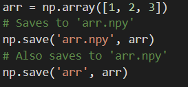

After performing data manipulation with NumPy, it's a good idea to save the data in a file for future use. To do this, we use the np.save function.
The first argument for the function is the name/path of the file we want to save our data to. The file name/path should have a ".npy" extension. If it does not, then np.save will append the ".npy" extension to it.
The second argument for np.save is the NumPy data we want to save. The function has no return value. Also, the format of the ".npy" files when viewed with a text editor is largely gibberish when viewed with a text editor.
If np.save is the NumPy data we want to save. The function has no return value. Also, the format of the ".npy" files when viewed with a text editor is largely gibberish when viewed with a text editor.

Loading
After saving our data, we can load it again using np.load. The function's required argument is the file name/path that contains the saved data. It returns the NumPy data exactly as it was saved.
Note that np.load will not append the ".npy" extension to the file name/path if it is not there.